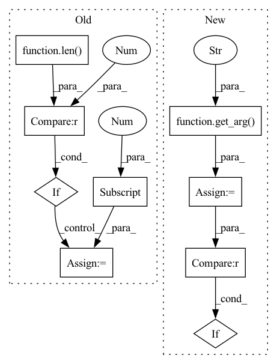

Pattern ID :9953
Before Change
// get whether to keep dimensions
if "keepdim" in ctx.method_kwargs:
keep_dims = ctx.method_kwargs["keepdim"]
elif len(ctx.method_args) == 3 :
keep_dims = ctx.method_args[2]
else:
keep_dims = False
layer = ctx.network.add_reduce(input_trt, trt.ReduceOperation.AVG, axes, keep_dims)After Change
input = ctx.method_args[0]
input_trt = trt_(ctx.network, input)
output = ctx.method_return
dim = get_arg( ctx, "dim" , pos=1, default=None)
keep_dims = get_arg(ctx, "keepdim", pos=2, default=False)
// get dims from args or kwargs
if dim is None :
dim = tuple(range(len(input.shape)))
// convert list to tupleIn pattern: SUPERPATTERN
Frequency: 3
Non-data size: 9
Instances Fragment ID: 35598685
Project Name: grimoire/torch2trt_dynamic
Commit Name: 11d2ef919763c792d1389016c4f2f4792fb47a0e
Time: 2020-07-27
Author: streetyao@live.com
File Name: torch2trt/converters/mean.py
M Class Name: AnonimousClass
N Class Name: AnonimousClass
M Method Name: convert_mean(1)
N Method Name: convert_mean(1)
M Parent Class:
N Parent Class:
M File Name: torch2trt/converters/mean.py
N File Name: torch2trt/converters/mean.py
M Start Line: 13
M End Line: 38
N Start Line: 8
N End Line: 25
Before Change
@tensorrt_converter("torch.Tensor.clamp")
def convert_clamp(ctx):
input = ctx.method_args[0]
if len(ctx.method_args)>1 :
min_val = ctx.method_args[1]
else:
min_val = ctx.method_kwargs["min"]
if len(ctx.method_args)>2:
max_val = ctx.method_args[2]After Change
def convert_clamp(ctx):
input = ctx.method_args[0]
min_val = get_arg(ctx, "min", pos=1, default=None)
max_val = get_arg( ctx, "max" , pos=2, default=None)
input_trt = trt_(ctx.network, input)
output = ctx.method_return
if min_val is not None:
layer = __add_clamp(ctx.network, input_trt, min_val, trt.ElementWiseOperation.MAX)
input_trt = layer.get_output(0)
if max_val is not None :
layer = __add_clamp(ctx.network, input_trt, max_val, trt.ElementWiseOperation.MIN)
output._trt = layer.get_output(0) Fragment ID: 35598684
Project Name: grimoire/torch2trt_dynamic
Commit Name: 50f52591810e207415cd1146e4fbf813e630a28e
Time: 2020-09-09
Author: streetyao@live.com
File Name: torch2trt/converters/clamp.py
M Class Name: AnonimousClass
N Class Name: AnonimousClass
M Method Name: convert_clamp(1)
N Method Name: convert_clamp(1)
M Parent Class:
N Parent Class:
M File Name: torch2trt/converters/clamp.py
N File Name: torch2trt/converters/clamp.py
M Start Line: 117
M End Line: 129
N Start Line: 117
N End Line: 128
Before Change
// get dims from args or kwargs
if "dim" in ctx.method_kwargs:
dim = ctx.method_kwargs["dim"]
elif len(ctx.method_args) >= 2 :
dim = ctx.method_args[1]
// axes = 1 << (dim - 1)
if not support_dynamic_shape:
dim -= 1After Change
output = ctx.method_return
// get dims from args or kwargs
dim = get_arg( ctx, "dim" , pos=1, default=None)
if dim is None :
dim = -1
if dim<0:
dim = len(input.shape)+dim Fragment ID: 35598692
Project Name: grimoire/torch2trt_dynamic
Commit Name: 8fb71f779dd81f951e70cb82520f827e83ef6be5
Time: 2020-04-21
Author: streetyao@live.com
File Name: torch2trt/converters/softmax.py
M Class Name: AnonimousClass
N Class Name: AnonimousClass
M Method Name: convert_softmax(1)
N Method Name: convert_softmax(1)
M Parent Class:
N Parent Class:
M File Name: torch2trt/converters/softmax.py
N File Name: torch2trt/converters/softmax.py
M Start Line: 17
M End Line: 23
N Start Line: 12
N End Line: 24